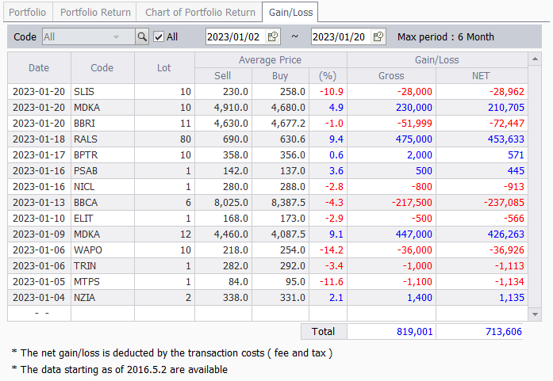

Win Rate
Apakah win rate merupakan benchmark yang paling penting dalam trading?
Berikut ini merupakan contoh real hasil trading saham. Dari 14 kali trading hanya 6 kali yang menghasilkan profit, sehingga win rate-nya hanya 43%, tetapi masih dalam kondisi net profit. Hal ini terjadi karena menggunakan money managemen yang benar.
Walaupun secara persentase loss lebih besar daripada persentase profit, tetapi jumlah money yang dialokasikan tersebut jumlahnya kecil. Untuk saham-saham third liner yang memiliki risiko lebih besar menggunakan porsi money yang kecil. Sedangkan saham-saham second liner menggunakan porsi money yang lebih besar. Perlu diketahui juga untuk persentase loss yang besar pada saham third liner ini berdasarkan pada target risk reward 1:2.
Jadi, benchmark yang paling penting dalam trading yaitu pertumbuhan portfolio. Portfolio yang bertumbuh setiap bulan lebih baik daripada win rate besar tapi portfolio tidak bertumbuh. Dalam bertumbuh tidak perlu selalu profit terus setiap bulan, bisa saja dalam 1 atau 2 bulan kita loss, tetapi bulan berikutnya profit lagi, dan secara jangka panjang (misalkan 1 tahun) itu tetap net profit.